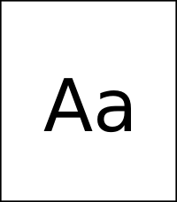

Drawer QML Type
A side panel control. More...
| Import Statement: | import Qt.labs.controls 1.0 |
| Inherits: |
Properties
- animation : Animation
- contentItem : Item
- edge : enumeration
- position : real
Signals
- void clicked()
Methods
Detailed Description
Drawer provides a swipe-based side panel, similar to those often used in touch interfaces to provide a central location for navigation.
 Drawer can be positioned at any of the four edges of the content item. | The drawer is then opened by "dragging" it out from the left edge |
In the image above, the application's contents are "pushed" across the screen. This is achieved by applying a translation to the contents:
transform: Translate {
x: (1.0 - drawer.position) * listview.width
}
If you would like the application's contents to stay where they are when the drawer is opened, don't apply a translation.
Note: Types in the Qt.labs module are not guaranteed to remain compatible in future versions.
See also SwipeView, Customizing Drawer, Navigation Controls, and Container Controls.
Property Documentation
animation : Animation |
This property holds the animation for the position property. It is used to animate the drawer's movement.
If no valid animation is set, the drawer's movement will not be animated.
contentItem : Item |
This property holds the content item that the drawer displays when opened.
This property holds the edge of the content item at which the drawer will open from. The acceptable values are:
| Constant | Description |
|---|---|
Qt.TopEdge | The top edge of the content item. |
Qt.LeftEdge | The left edge of the content item (default). |
Qt.RightEdge | The right edge of the content item. |
Qt.BottomEdge | The bottom edge of the content item. |
This property holds the position of the drawer relative to its final destination. That is, the position will be 0 when the drawer is fully closed, and 1 when fully open.
Signal Documentation
Method Documentation
This method closes the drawer, animating the movement if a valid animation has been set.
This method opens the drawer, animating the movement if a valid animation has been set.